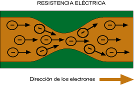
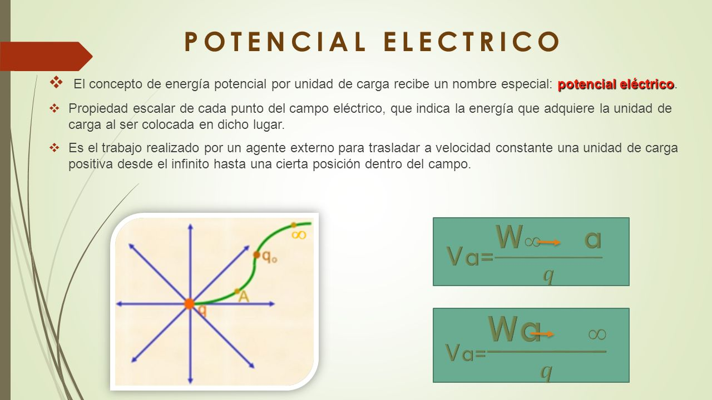
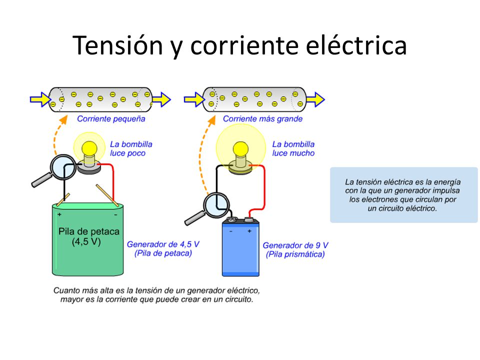

RESISTENCIA ELÉCTRICA
Resistencia eléctrica. Es toda oposición que encuentra la corriente a su paso por un circuito eléctrico cerrado, atenuando o frenando el libre flujo de circulación de las cargas eléctricas o electrones. Cualquier dispositivo o consumidor conectado a un circuito eléctrico representa en sí una carga, resistencia u obstáculo para la circulación de la corriente eléctrica.

POTENCIAL ELÉCTRICO
Si una carga experimenta una fuerza al entrar en un campo eléctrico, necesitará cierta cantidad de energía para contrarrestarla. A esta acción se le llama trabajo o potencial eléctrico. Se define entonces, como la cantidad de energía que hace falta para mover una carga de un punto a otro. La unidad utilizada para expresar esta medida es el Voltio.
El término “potencial eléctrico”, está relacionado con la expresión “diferencia de potencial”. Se refiere a la carga utilizada para mover una carga dentro de un mismo campo eléctrico.

ENERGÍA ELÉCTRICA
La energía eléctrica es la potencia por unidad de tiempo. La energía se consume, es decir a más tiempo conectado un receptor más energía consumirá. También un receptor que tiene mucha potencia consumirá mucha energía. Como vemos la energía depende de dos cosas, la potencia del receptor y del tiempo que esté conectado.
Su fórmula es E= P x t (potencia por tiempo)
Su unidad es el w x h (vatio por hora) pero suele usarse un múltiplo que es el Kw x h (Kilovatios por hora)
Si ponemos en la fórmula la potencia en Kw y el tiempo en horas ya obtendremos la energía en Kw x h.
TENSIÓN ELÉCTRICA
Se dice que una fuente tiene una diferencia de potencial o tensión de 1 Voltio cuando al conectarle un resistor de 1 Ohms circula 1 A de corriente eléctrica por el. La tensión de una fuente se individualiza por la letra E y su unidad el Voltio por la letra V. Las siguientes igualdades nos indican los múltiplos y submúltiplos mas utilizados:
microvolt 1.000.000 uV = 1 V
milivolt 1.000 mV = 1 V
Kilovolt 1 KV = 1.000 V
La tensión se mide en Voltios. Cuando la tensión es de 0V (cero voltios, no hay diferencia de potencial entre un polo y el otro) ya no hay posibilidad de corriente y si fuera una pila diremos que la pila se ha agotado. El aparato de medida de la tensión es el voltímetro.
